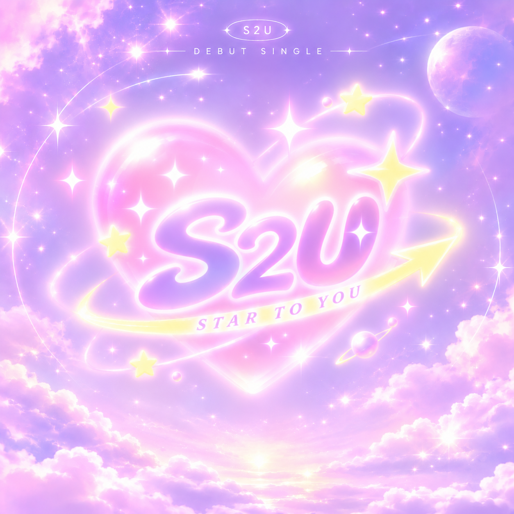

THE FIRST STAGE
새로운 세계로 향하는 첫걸음. S2U의 시작을 밝고 경쾌한 STAR TO U만의 음악으로 표현했습니다.
게임 속 세계를 자유롭게 넘나드는 아이돌 S2U. 그들의 첫 번째 이야기는 설렘과 반짝임으로 가득한 데뷔곡 〈STAR TO YOU〉에서 시작됩니다.
새로운 세계로 향하는 첫걸음. S2U의 시작을 밝고 경쾌한 STAR TO U만의 음악으로 표현했습니다.
통통 튀는 리듬과 밝은 멜로디, 반짝이는 사운드로 데뷔의 설렘과 청량한 에너지를 담았습니다.
S2U — STAR TO YOU
AI Music Production
K-pop Girl Group Debut Single
Concept & Storytelling
Original Lyrics & Lyric Direction
Music Direction
AI Music Production
Music Arrangement & Editing
AI-assisted Lyric Refinement
AI Music Generation
Suno
Suno Editor

S2U (Star to U)
Original Lyrics & Lyric Direction
곡의 이야기와 가사를 직접 창작하고, 멜로디와 리듬에 어울리도록 표현과 음절을 다듬어 데뷔곡의 메시지를 완성했습니다.
S2U의 밝고 통통 튀는 데뷔 콘셉트에 맞춰 음악의 스타일과 보컬 방향을 설정하고, AI를 활용해 곡의 사운드를 구체화했습니다.
원하는 결과가 나올 때까지 필요한 구간을 다시 생성하고, 각 구간을 연결하고 조정해 하나의 완성된 데뷔곡으로 구성했습니다.